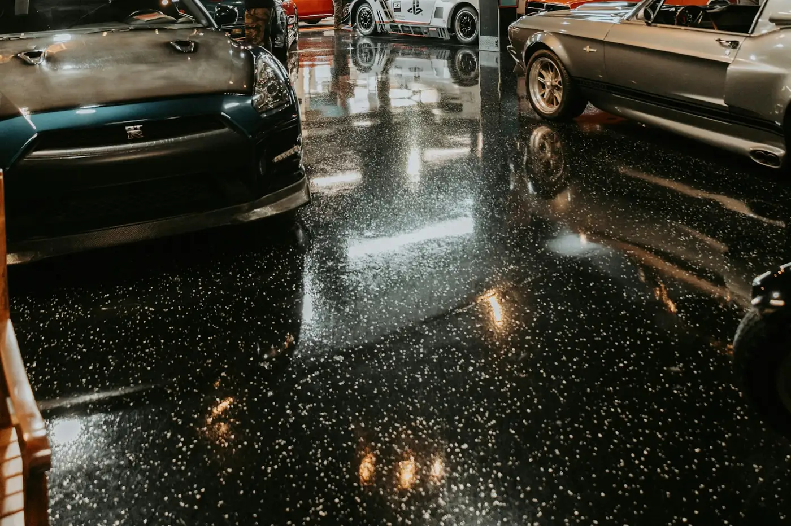

Polyaspartic floor coating in Lake Havasu City is the answer for garages that face the sun and owners who want the floor back fast. It doesn’t yellow at the door line and you can usually walk on it the same evening.
(928) 490-8929 Call Now for a Free Estimate
A polyaspartic coating goes on ground concrete just like epoxy, but it sets in a fraction of the time. Many garages get a polyaspartic base, a flake broadcast and a polyaspartic clear coat in a single day. Because it cures so fast, crews mix it in small batches and work in sections.
The first thing people ask is “Can I park on it tonight?” Not tonight. Usually within a day or two, depending on the product and the heat.
Standard epoxy resins break down under UV light and slowly amber, the same way an old plastic headlight goes cloudy. In a shaded garage you may never notice. In a Havasu garage with the door up while you wash the boat, the first two or three feet of floor change color first. Polyaspartic resins are aliphatic, which means sunlight doesn’t break them down the same way.
Polyaspartic material costs more than epoxy, but the faster install saves labor, so the gap is smaller than people expect. Size, slab condition, flake coverage and whether the area is indoors or out set the final number. Call (928) 490-8929 for a written quote after a free look at your floor.
Pick polyaspartic where sunlight, speed or outdoor use matter. Pick an epoxy base where you want a long working time, a thick build over rough concrete or a lower material cost, then top it with polyaspartic for UV protection. Most of our garage floors end up as that hybrid.
Most polyaspartic floors take light foot traffic in a few hours and vehicles in about 24 to 48 hours, depending on temperature and the product. Hot summer slabs cure faster, which is one reason summer jobs start early in the morning.
Yes. Its UV stability makes it a good choice for covered patios, pool-side slabs and outdoor kitchens. A slip-resistant additive is a good idea anywhere the surface gets wet.
A properly installed polyaspartic system on ground concrete resists hot tire pickup well. The bond to the slab matters more than the product name, so grinding is still the most important step.
In a garage that gets direct sun or where downtime matters, usually yes. In a fully shaded room with no UV exposure, a quality epoxy floor with a polyaspartic topcoat gives you most of the benefit for less.
Ask about a one-day polyaspartic floor for your garage.
Call (928) 490-8929 for a Free Estimate